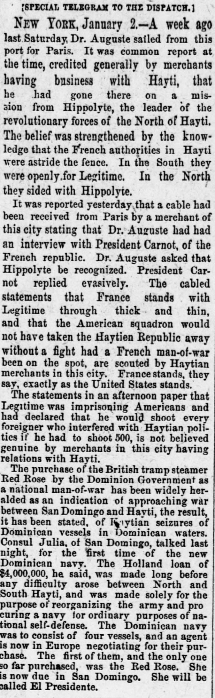
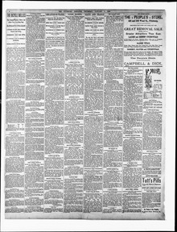

The belief was strengthened by the know ledge that the FrenchLa creencia se vio fortalecida por el conocimiento de que los franceses
Pittsburg Dispatch. Pittsburg [Pa.], January 3, 1889. Page 6. Published by Rook, O'Neil & Co. A daily newspaper, 1880–1923.Pittsburg Dispatch. Pittsburg [Pa.], 3 de enero de 1889. Página 6. Publicado por Rook, O'Neil & Co. Periódico diario, 1880–1923. View the originalVer el original


See the full pageVer la página completaAccording to the Pittsburg dispatch of January 3, 1889, French authorities in Hayti were reportedly divided between Legitime in the south and Hippolyte in the north, while a received cable stated that President Carnot gave an evasive reply to Dr. Auguste's request to recognize Hippolyte. Local merchants dismissed claims that France firmly backed Legitime, that the American squadron would have faced a French warship over the Haytien Republic, and that Legitime was imprisoning Americans or threatening to execute foreigners. Additionally, the Dominion Government's purchase of the British steamer Red Rose as a national man-of-war was widely reported as a sign of approaching war between San Domingo and Hayti due to vessel seizures, though Consul Julia of San Domingo noted that a $4,000,000 Holland loan had been made long before.A tenor del Pittsburg dispatch del 3 de enero de 1889, las autoridades francesas en Haití aparecían divididas entre Légitime en el sur e Hyppolite en el norte, en tanto un cable recibido daba cuenta de que el presidente Carnot dio una contestación evasiva a la petición del Dr. Auguste para que se reconociera a Hyppolite. Los hombres de negocios locales desestimaron las versiones de que Francia apoyara decididamente a Légitime, que la flotilla estadounidense se fuera a batir con un buque de guerra francés a causa del Haytien Republic, o que Légitime encarcelara a estadounidenses o amenazara con ajusticiar extranjeros. Asimismo, la compra por el gobierno dominicano del vapor británico Red Rose para transformarlo en buque de guerra fue juzgada señal de inminente guerra entre Santo Domingo y Haití por incidentes navales, si bien el cónsul de Santo Domingo Julia aclaró que un empréstito holandés de 4.000.000 de pesos se concertó mucho antes.
FULL TEXT:TEXTO COMPLETO:
[SPECIAL TELEGRAM TO THE DISPATCH.][TELEGRAMA ESPECIAL AL DISPATCH.]
NEW YORK, January 2.—A week ago last Saturday, Dr. Auguste sailed from this port for Paris. It was common report at the time, credited generally by merchants having business with Hayti, that he had gone there on a mission from Hippolyte, the leader of the revolutionary forces of the North of Hayti. The belief was strengthened by the knowledge that the French authorities in Hayti were astride the fence. In the South they were openly for Legitime. In the North they sided with Hippolyte.NUEVA YORK, 2 de enero.—Hace una semana el sábado pasado, el Dr. Auguste zarpó de este puerto para París. Era informe común en el momento, creído generalmente por comerciantes que tienen negocios con Haití, que había ido allí en una misión de Hippolyte, el líder de las fuerzas revolucionarias del Norte de Haití. La creencia fue fortalecida por el conocimiento de que las autoridades francesas en Haití estaban a horcajadas sobre la cerca. En el Sur estaban abiertamente por Legitime. En el Norte se pusieron del lado de Hippolyte.
It was reported yesterday that a cable had been received from Paris by a merchant of this city stating that Dr. Auguste had had an interview with President Carnot, of the French republic. Dr. Auguste asked that Hippolyte be recognized. President Carnot replied evasively. The cabled statements that France stands with Legitime through thick and thin, and that the American squadron would not have taken the Haytien Republic away without a fight had a French man-of-war been on the spot, are scouted by Haytian merchants in this city. France stands, they say, exactly as the United States stands.Se reportó ayer que un cable había sido recibido desde París por un comerciante de esta ciudad declarando que el Dr. Auguste había tenido una entrevista con el presidente Carnot, de la república francesa. El Dr. Auguste pidió que Hippolyte fuera reconocido. El presidente Carnot respondió evasivamente. Las declaraciones cableadas de que Francia está con Legitime en las buenas y en las malas, y que la escuadra estadounidense no se habría llevado la Haytien Republic sin una lucha si un buque de guerra francés hubiera estado en el lugar, son desestimadas por comerciantes haitianos en esta ciudad. Francia está, dicen, exactamente como están los Estados Unidos.
The statements in an afternoon paper that Legitime was imprisoning Americans and had declared that he would shoot every foreigner who interfered with Haytian politics if he had to shoot 500, is not believed genuine by merchants in this city having relations with Hayti.Las declaraciones en un periódico de la tarde de que Legitime estaba encarcelando estadounidenses y había declarado que fusilaría a todo extranjero que interfiriera con la política haitiana si tenía que fusilar a 500, no son creídas genuinas por comerciantes en esta ciudad que tienen relaciones con Haití.
The purchase of the British tramp steamer Red Rose by the Dominion Government as a national man-of-war has been widely heralded as an indication of approaching war between San Domingo and Hayti, the result, it has been stated, of Haytian seizures of Dominican vessels in Dominican waters. Consul Julia, of San Domingo, talked last night, for the first time of the new Dominican navy. The Holland loan of $4,000,000, he said, was made long before any difficulty arose between North and South Hayti, and was made solely for the purpose of reorganizing the army and procuring a navy for ordinary purposes of national self-defense. The Dominican navy was to consist of four vessels, and an agent is now in Europe negotiating for their purchase. The first of them, and the only one so far purchased, was the Red Rose. She is now due in San Domingo. She will be called El Presidente.La compra del vapor británico de carga Red Rose por el Gobierno dominicano como buque de guerra nacional ha sido ampliamente anunciada como indicación de una guerra cercana entre Santo Domingo y Haití, el resultado, se ha declarado, de capturas haitianas de buques dominicanos en aguas dominicanas. El Cónsul Julia, de Santo Domingo, habló anoche, por primera vez de la nueva marina dominicana. El préstamo de Holanda de $4,000,000, dijo, fue hecho mucho antes de que surgiera dificultad alguna entre el Norte y el Sur de Haití, y fue hecho únicamente con el propósito de reorganizar el ejército y procurar una marina para fines ordinarios de autodefensa nacional. La marina dominicana había de consistir de cuatro buques, y un agente está ahora en Europa negociando su compra. El primero de ellos, y el único comprado hasta ahora, fue el Red Rose. Ahora se espera en Santo Domingo. Será llamado El Presidente.
This collection gathers the coverage of the Dominican Republic in the American press, in the order it was published.Esta colección reúne la cobertura de la República Dominicana en la prensa estadounidense, en el orden en que se publicaron.